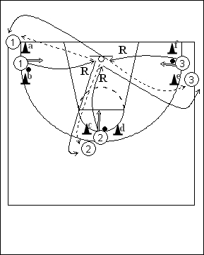

Catégorie : SHOOTS (Sh-006)
Déroulement
- Trois files de joueurs, la file 1 entre les cônes a et b, la file 2 entre les cônes c et d et la file 3 entre les cônes e et f. Le premier joueur de chaque file possède un ballon.
- Le premier joueur de la file 1 effectue un jump shoot; il réalise aussitôt son rebond et passe le ballon au deuxième joueur de la file 1. De même, le premier joueur de la file 2 shoote, joue le rebond et passe au deuxième joueur de la file 2. Dans le même temps, le premier joueur de la file 3 prend son shoot, suivi du rebond et de la passe au deuxième joueur de la file 3.
- Après avoir passé au deuxième joueur de la file 1, le premier joueur de cette file va en 2; de même 2 va en 3 et 3 va en 1.
Coaching points
- Il est important que les trois premiers joueurs shootent avec un très léger décalage.
- Il faut évidemment un minimum de 6 joueurs pour la réalisation du drill et avec plus de 11 joueurs, on pratique le même exercice sur l’autre panneau.